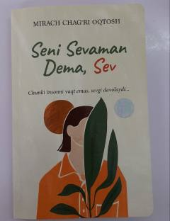

SSSevgi insonni davolaydi — turk yozuvchisining his-tuyg'uli romani.
Bu kitob turk yozuvchisi Mirach Chag'ri Oqtosh qalamiga mansub bo'lib, sevgi va his-tuyg'ular haqida so'z yuritadi. Asarning shiori — "Chunki insonni vaqt emas, sevgi davolaydi" — kitobning asosiy g'oyasini aks ettiradi. Kitob 2022-yilda Toshkentda "Best Book" nashriyoti tomonidan chop etilgan.